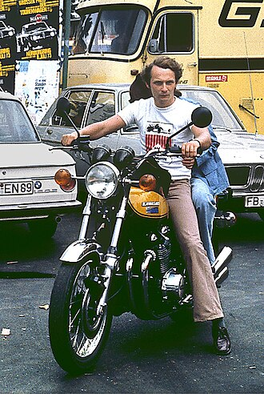

Австрийский автогонщик

Сведения
Родился: 22 февраля 1949 года в Вене (Австрия) в состоятельной семье банкиров, которые не поддерживали его увлечение автоспортом.
Выступал: В Формуле-1 с 1971 по 1985 год (с перерывом). Главные команды в карьере — Ferrari и McLaren. Также пилотировал болиды March, BRM и Brabham. Вошел в историю автоспорта благодаря невероятной силе воли: в 1976 году на трассе Нюрбургринг он попал в страшную аварию, получил тяжелейшие ожоги лица и дыхательных путей, но вернулся за руль всего через 6 недель.
Выигрывал
-
Трехкратный чемпион мира Формулы-1: 1975, 1977 (в составе Ferrari) и 1984 (в составе McLaren).
-
Одержал 25 побед в Гран-при.
-
54 раза поднимался на подиум
После завершения карьеры: Был очень активен как в бизнесе, так и в автоспорте.
-
Основал две успешные чартерные авиакомпании (Lauda Air и Niki) и сам часто пилотировал пассажирские самолеты.
-
Работал консультантом в Ferrari, затем руководил командой Jaguar Racing.
-
С 2012 года стал неисполнительным директором команды Mercedes-AMG Petronas F1. Именно он сыграл ключевую роль в приглашении Льюиса Хэмилтона в команду, что положило начало эпохе доминирования Mercedes.
Умер: 20 мая 2019 года в возрасте 70 лет в клинике Цюриха (Швейцария). Причиной смерти стали проблемы со здоровьем и осложнения после операции по пересадке легких (во многом это были долгосрочные последствия вдыхания токсичных продуктов горения во время аварии 1976 года).
Википедия